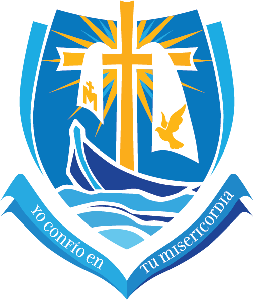
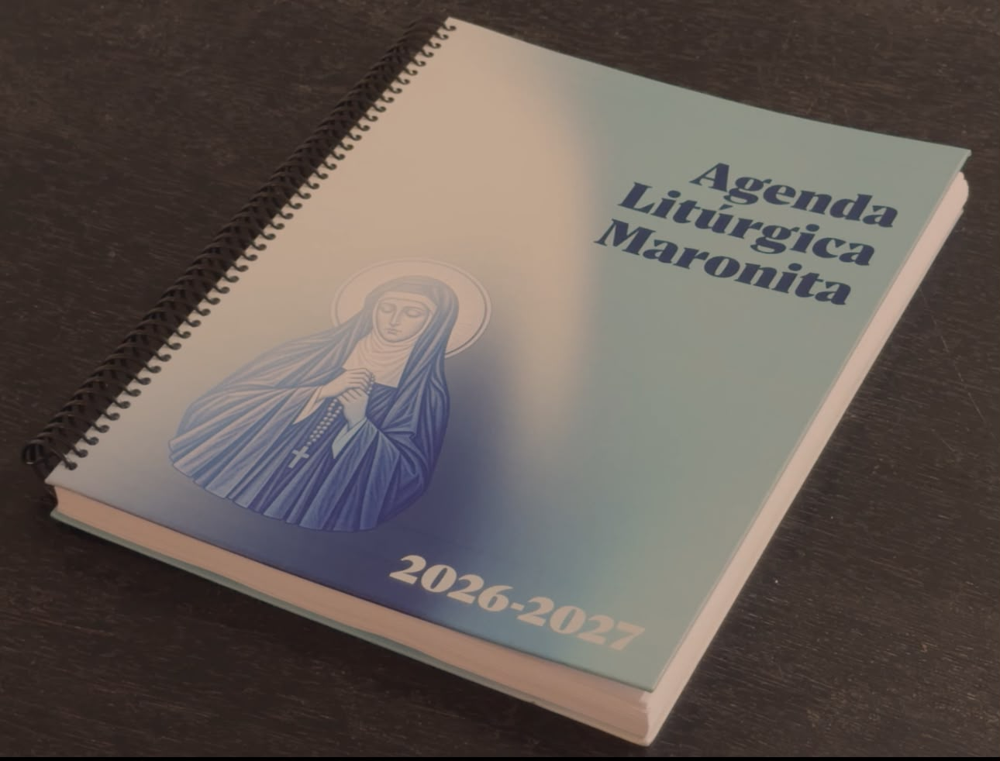
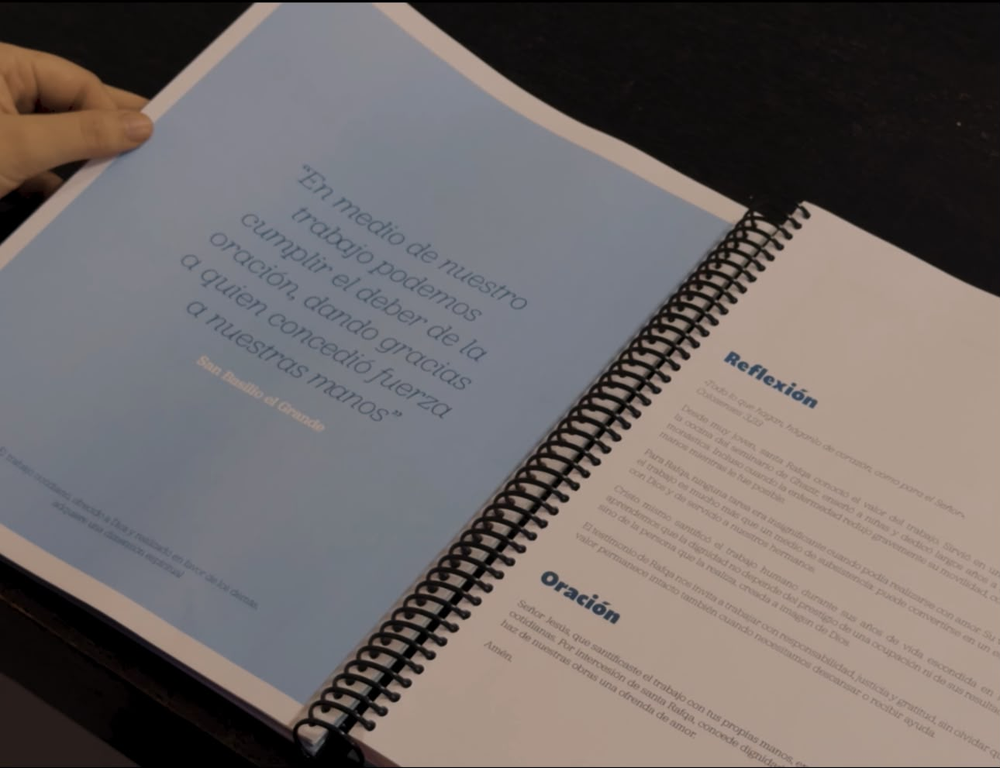
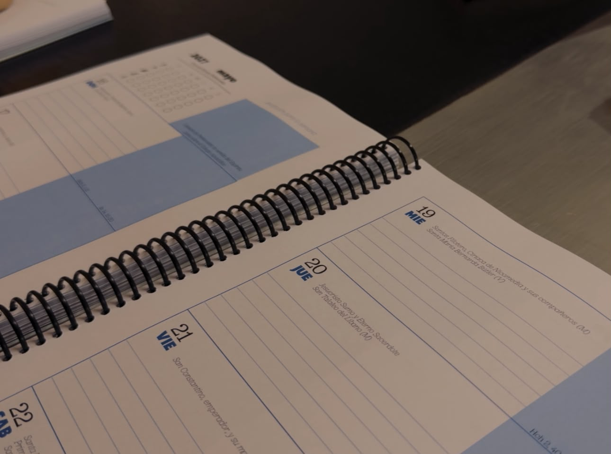
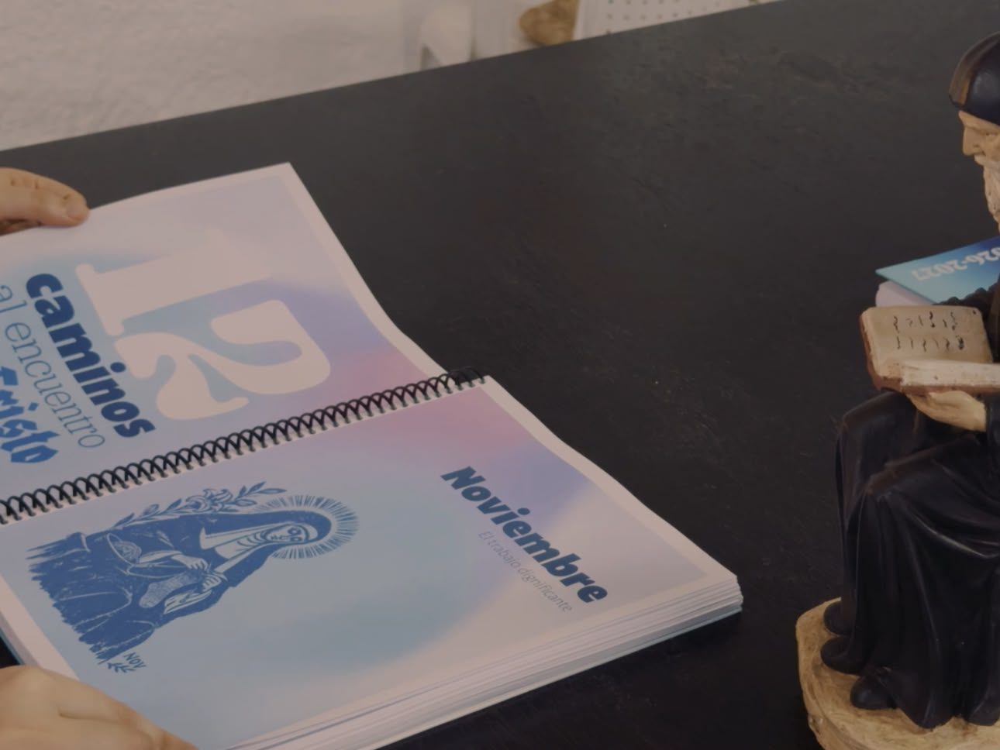
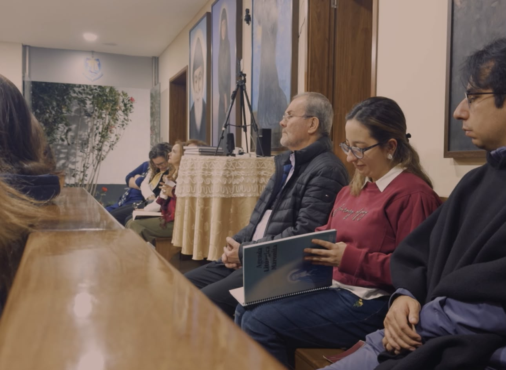

01 EDICIÓN BLANCO Y NEGRO
Un espacio para lo esencial.
Agenda Litúrgica Maronita 2027
Impresión interior en blanco y negro.
DONACIÓN POR AGENDA$80.000 COP

EXARCADO MARONITASANTA RAFQA DE COLOMBIAUN AÑO CON DIOS · 2027
Entre tantos compromisos, reserva un lugar para lo eterno. Vive el año de la mano de nuestra fe y ayuda a levantar una casa para nuestra comunidad.
Elige tu agendaDesde $80.000 COP de donación · Elaborada bajo pedido
El tiempo pasa.
La fe permanece.
TU AGENDA. NUESTRA CASA.
Los días pasan y los meses vuelan. Pero una oración compartida, una familia reunida en torno al altar y una comunidad que crece dejan huella.
Con tu donación por la Agenda Litúrgica Maronita 2027, nos ayudas a hacer realidad el sueño de construir nuestro templo: una casa donde las generaciones que vendrán puedan encontrarse con Nuestro Señor, Dios y Salvador Jesucristo.
MÁS CERCA DE TU VIDA
Una mirada a la agenda: páginas para tus días, momentos de oración y la fe que compartimos.




Fotografías de referencia de la agenda. La portada fotografiada lleva la inscripción 2026–2027.

UNA FE QUE SE COMPARTE
Hay un lugar para ti en esta familia. Y hay un sueño que podemos hacer crecer juntos: un templo donde reunirnos, orar y transmitir la fe a quienes vienen detrás.
Haz parte de este propósitoELIGE LA TUYA
Para acompañar tus días o regalarle a alguien querido un año con espacio para Dios.
Agenda Litúrgica Maronita 2027
Impresión interior en blanco y negro.
Agenda Litúrgica Maronita 2027
Impresión interior a color.
Ambas presentaciones se elaboran bajo pedido. El envío es adicional y lo paga quien recibe.
DE TU ELECCIÓN A TUS MANOS
Selecciona la presentación, la cantidad y cómo deseas recibirla.
Encontrarás los datos de Bancolombia en el resumen de tu pedido.
Envía el mensaje preparado y adjunta allí el comprobante. María verificará la transferencia.
Tras la confirmación, la mandamos a elaborar. Coordinamos contigo la recogida o el envío.
DA EL PRIMER PASO
Completa tus datos, realiza la transferencia y continúa con María por WhatsApp para confirmar tu pedido.
CON TODA CONFIANZA
Sí. Con tu donación por la agenda apoyas la construcción de nuestro templo y el crecimiento de nuestra comunidad.
Las agendas se elaboran bajo pedido, tras verificar tu transferencia. María te confirmará el plazo de elaboración y coordinará contigo la entrega. Si la necesitas para una fecha especial, consúltale antes de transferir.
La donación por la agenda se realiza previamente por transferencia bancaria. Únicamente el envío se paga contraentrega, directamente al recibirlo. La tarifa se coordina según el destino.
Puedes recogerla en el Exarcado Maronita Santa Rafqa de Colombia, Carrera 50A #118-18, Bogotá, cuando te confirmemos que está lista. También hacemos envíos a cualquier parte de Colombia; el envío es adicional y lo pagas al recibir.
Completa el formulario y continúa por WhatsApp. Envía el mensaje preparado y usa el botón para adjuntar una imagen o documento en el chat con María. El comprobante no se carga en esta página.
Este formulario prepara un mensaje en tu navegador y no guarda tus datos en esta página. Al continuar, tus datos se incluyen en el enlace que abre WhatsApp. Revisa y envía el mensaje a María Pérez para gestionar el pedido, verificar la transferencia y coordinar la entrega. Para consultar o solicitar la corrección o eliminación de la información enviada, escribe al 310 200 4050. WhatsApp aplica sus propias condiciones de privacidad.
QUE JUNTOS CONSTRUYAMOS SU CASA